Research
-
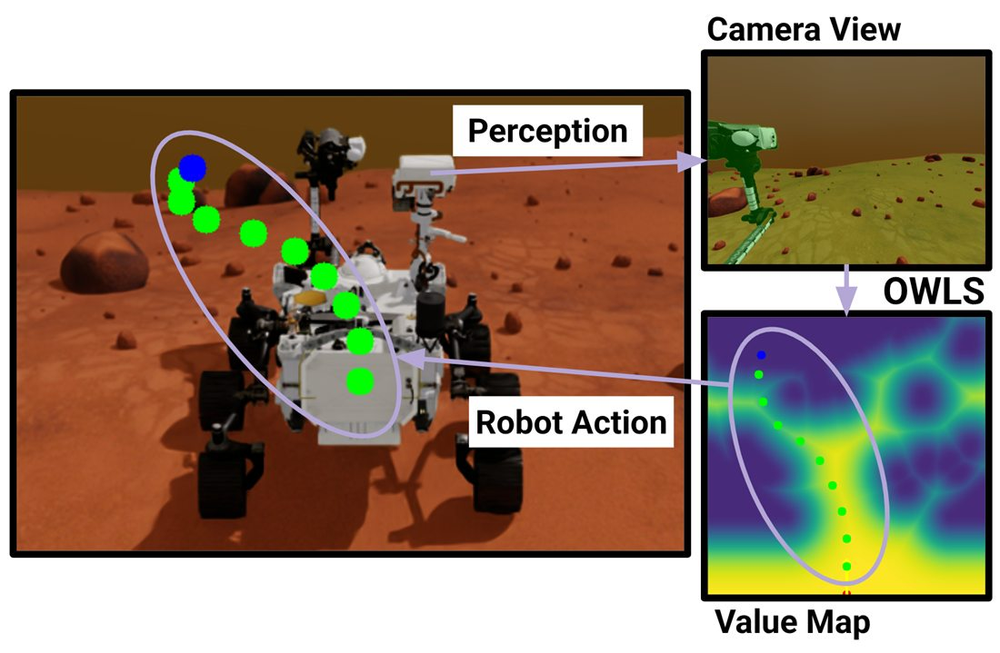
Preprint, earlier version at a CVPR 2026 workshopOWLS: Open-world Language-conditioned Speed Fields for Zero-Shot Rover Navigation
Chahyon Ku, Erica Tevere, Georgios Georgakis, Rudra Mukherjee, Bernadette Bucher
Plans directly over a vision-language model's dense features. A text prompt describing traversable terrain becomes the speed field of a minimum-time planner.
-
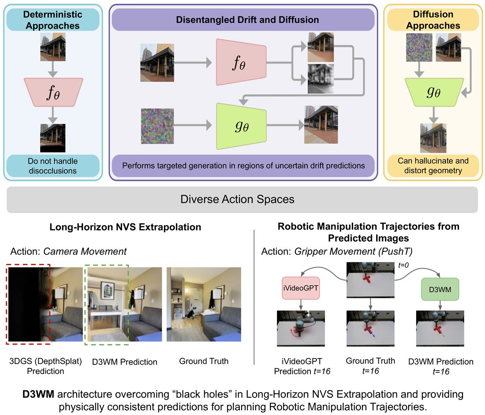
PreprintDecoupled Drift-Diffusion World Models for Consistent Future Frame Prediction
Anton Arapin, Aditya Singh, Yixin Wang, Jun Gao, Bernadette Bucher
Predicts the deterministic next frame along with a map of where the scene is uncertain, then uses that map to guide a conditional diffusion process.
-
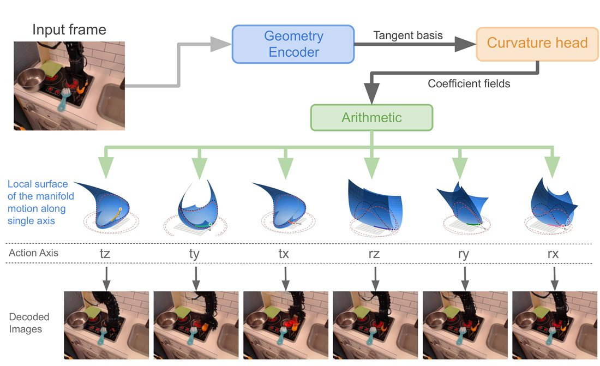
Workshop paper, CoRL 2026Action Jets: Learning the Local Shape of the Action-conditioned Data Manifold
Anton Arapin, Chahyon Ku, Bernadette Bucher
For a fixed state, the frames reachable by varying an action lie on a low-dimensional manifold. Action Jets estimates its local shape, so a short-horizon planner can score many more candidate actions.
-
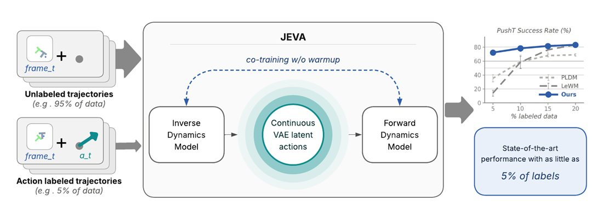
Workshop paper, CoRL 2026JEVA: Joint Encoders for Variational Action World Models
Aditya Pratap Singh, Sanyam Mehta, Yixin Wang, Nima Fazeli, Bernadette Bucher
Trains an inverse dynamics model and a forward world model together through a continuous latent action. Action-free trajectories shape the dynamics, and a small labeled fraction ties the latent actions to real robot controls.
-
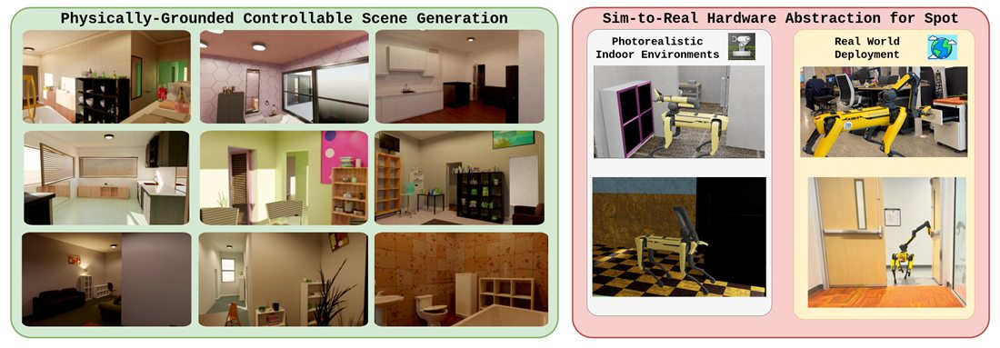
Workshop paper, CVPR 2026PhyGS: Physically-Grounded Controllable Scene Generation
Aparajito Saha, Zhen Hao Gan, Jinjia Guo, Jacob Skwirsk, Jeremy Acheampong, Anton Arapin, Chahyon Ku, Yue Hu, Nima Fazeli, Bernadette Bucher
Generates photorealistic, building-scale indoor scenes with working physics in IsaacSim, plus a hardware abstraction layer for Boston Dynamics Spot with Arm.
-
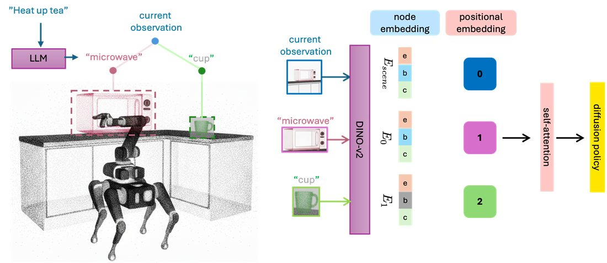
CVPR 2026Expanding Spatial and Temporal Context for Robotic Imitation Learning With Scene Graphs
Jianing Qian, Qinhe Peng, Emmanuel Panov, Leonor Fermoselle, Dinesh Jayaraman, Bernadette Bucher, Tarik Kelestemur
Uses a task-relevant scene graph as memory for a diffusion policy, so the robot can act on objects that left its view hundreds of steps earlier.
-
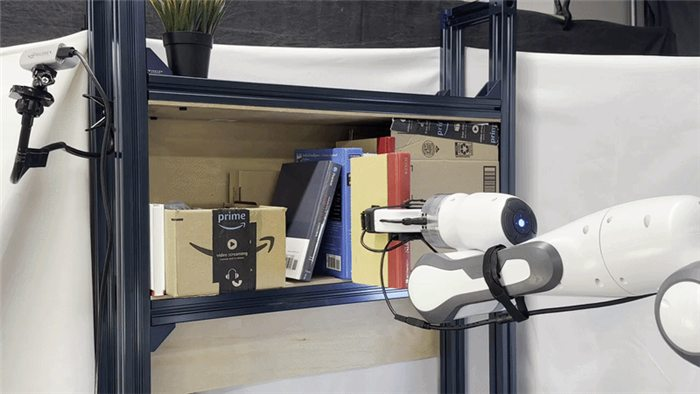
RSS 2026HydroShear: Hydroelastic Shear Simulation for Tactile Sim-to-Real Reinforcement Learning
An Dang, Jayjun Lee, Mustafa Mukadam, X. Alice Wu, Bernadette Bucher, Manikantan Nambi, Nima Fazeli
A tactile simulator that models stick-slip transitions, path-dependent force and shear, and full SE(3) object-sensor interactions, built for sim-to-real transfer on contact-rich tasks.
-
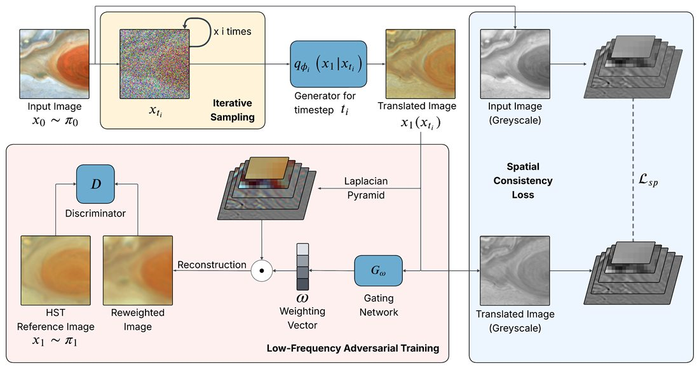
Preprint, earlier version at a CVPR 2025 workshopStructure-Preserving Unpaired Image Translation to Photometrically Calibrate JunoCam with Hubble Data
Aditya Pratap Singh, Shrey Shah, Ramanakumar Sankar, Emma Dahl, Gerald Eichstädt, Georgios Georgakis, Bernadette Bucher
Calibrates high-resolution JunoCam images of Jupiter against Hubble data while keeping the fine-scale atmospheric detail that standard methods blur out.
-
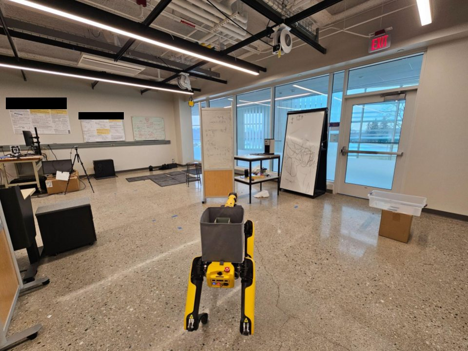
Workshop paper, CoRL 2025HELIOS: Hierarchical Exploration for Language-grounded Interaction in Open Scenes
Katrina Ashton, Chahyon Ku, Shrey Shah, Saumit Vedula, Tingrui Zhang, Wen Jiang, Kostas Daniilidis, Bernadette Bucher
A hierarchical scene representation and search objective for language-specified mobile manipulation, combining 2D semantic and occupancy maps with 3D Gaussian representations of task-relevant objects.
-
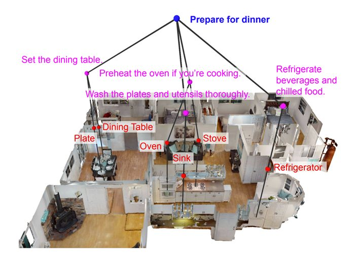
CVPR 2025ASHiTA: Automatic Scene-grounded HIerarchical Task Analysis
Yun Chang, Leonor Fermoselle, Duy Ta, Bernadette Bucher, Luca Carlone, Jiuguang Wang
Breaks a high-level instruction into subtasks grounded to a 3D scene graph, for instructions that never name the objects involved.
-
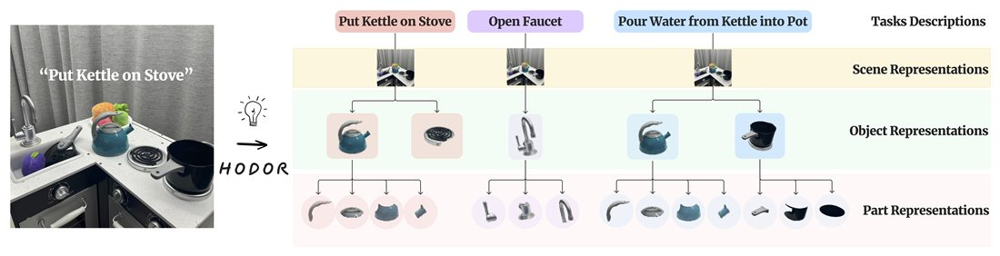
CoRL 2024Task-Oriented Hierarchical Object Decomposition for Visuomotor Control
Jianing Qian, Yunshuang Li, Bernadette Bucher, Dinesh Jayaraman
HODOR decomposes a scene into task-relevant objects and parts, so a policy sees detail only where the task needs it.
-
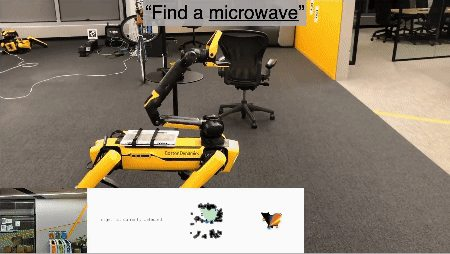
Best Paper in Cognitive Robotics, ICRA 2024VLFM: Vision-Language Frontier Maps for Zero-Shot Semantic Navigation
Naoki Yokoyama, Sehoon Ha, Dhruv Batra, Jiuguang Wang, Bernadette Bucher
Finds frontiers from an occupancy map and scores them with a language-grounded value map, so a robot explores toward objects it has never seen.
-
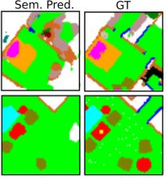
ICLR 2022Learning to Map for Active Semantic Goal Navigation
Georgios Georgakis, Bernadette Bucher, Karl Schmeckpeper, Siddharth Singh, Kostas Daniilidis
Learns to generate semantic maps outside the field of view and uses the uncertainty in those predictions to choose long-term goals.
-
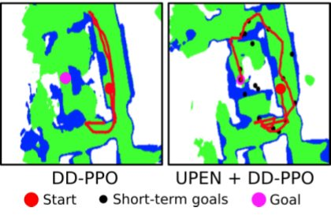
ICRA 2022Uncertainty-driven Planner for Exploration and Navigation
Georgios Georgakis, Bernadette Bucher, Anton Arapin, Karl Schmeckpeper, Nikolai Matni, Kostas Daniilidis
Learns to generate occupancy maps beyond the field of view and uses the model uncertainty to select paths for exploration and point-goal navigation.
-
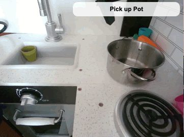
RSS 2022Bridge Data: Boosting Generalization of Robotic Skills with Cross-Domain Datasets
Frederik Ebert, Yanlai Yang, Karl Schmeckpeper, Bernadette Bucher, Georgios Georgakis, Kostas Daniilidis, Chelsea Finn, Sergey Levine
A multi-task, multi-domain dataset for reusing shared data in robot skill learning.
-
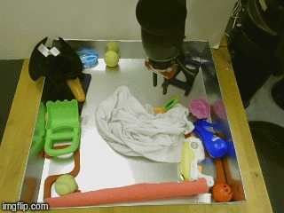
CoRL 2019RoboNet: Large-Scale Multi-Robot Learning
Sudeep Dasari, Frederik Ebert, Stephen Tian, Suraj Nair, Bernadette Bucher, Karl Schmeckpeper, Siddharth Singh, Sergey Levine, Chelsea Finn
A shared dataset of robotic experience across multiple robot platforms.
-
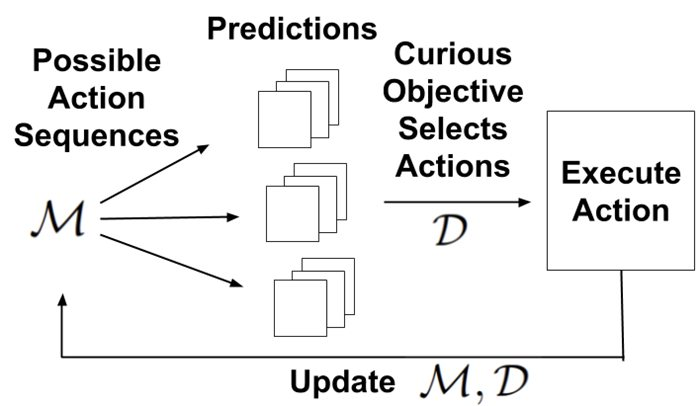
IROS 2021An Adversarial Objective for Scalable Exploration
Bernadette Bucher, Karl Schmeckpeper, Nikolai Matni, Kostas Daniilidis
A curiosity method for active learning: a discriminator trained alongside a prediction model steers the robot toward the observations and actions whose predictions look least realistic.
For published papers, see Professor Bucher's Google Scholar. Project sites that cover several papers: Task-Relevant Scene Structure for Imitation Learning and Uncertainty-driven Mapping and Navigation.
Simulation software
| PhyGS | Generates photorealistic, building-scale indoor scenes with working physics in IsaacSim, with an agent stack and hardware abstraction layer for Boston Dynamics Spot with Arm. Beta. | Project page Code |
|---|---|---|
| HydroShear | Tactile simulator that models stick-slip transitions, path-dependent force and shear, and full SE(3) object-sensor interactions for sim-to-real reinforcement learning. Developed with the MMint Lab. | Project page Code |
People
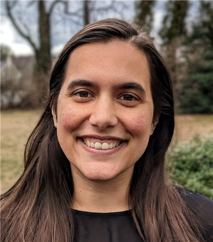
Bernadette Bucher
Director
Bernadette is an Assistant Professor in the Robotics Department (primary) and Computer Science and Engineering Department (by courtesy) at the University of Michigan. Before Michigan she worked at the Robotics and AI Institute (previously the Boston Dynamics AI Institute), NVIDIA Research, and Lockheed Martin Corporation. She received her PhD in Computer Science and M.S.E. in Robotics at the University of Pennsylvania, and an M.A. in Mathematics, M.A. in Economics, and B.S. in Mathematics and Economics from The University of Alabama.
PhD students
-
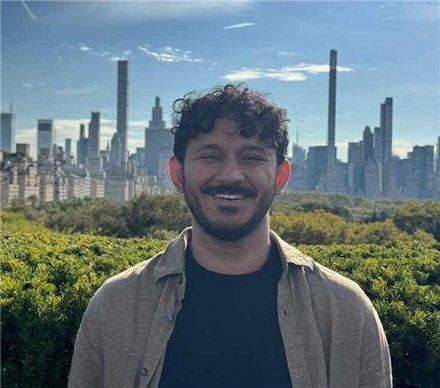
Aditya Pratap Singh Computer Science and Engineering - Chahyon Ku Robotics
- Anton Arapin Computer Science and Engineering
-
Gan Zhen Hao
Robotics
A*STAR National Science PhD Scholarship -
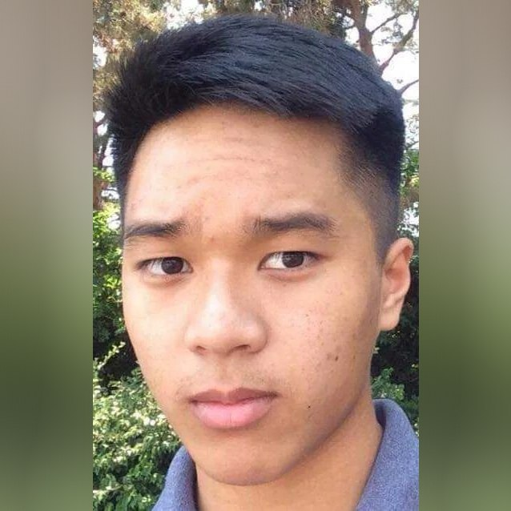
An Dang Robotics, co-advised by Nima Fazeli - Junzhe Wu Naval Architecture and Marine Engineering, co-advised by Maani Ghaffari
- Aparajito Saha Robotics
Support
Our research has been supported by:
 ROSES
ROSES LEAP-U
LEAP-U